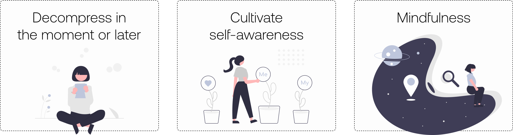

Everise is an app designed to guide through moments of stress.
It helps cultivate self-awareness by tracking what works for the user to overcome anxiety and stress, including mindfulness tips to encourage the mind to be present.
My role
Solo designer: from Research and Ideation to Wireframing and Prototyping, Designing the UI and continuously Testing and Iterating.
Duration
2 weeks / April 2021
Case study
Read the full case study in Medium
The problem
Nowadays, stress has become a serious public health challenge in our society. Aligned to this wellness topic and after a thorough research, I defined the problem statement of my case study to focus on self-awareness:
“Young adults that need to discover what works best for them to cope with stress and anxiety in the moment or later.”
The MVP is the result of the research’s data and user journey study. I defined three main areas of focus:
UX challenges
One of the main considerations I took into account when creating the information architecture for this app was the emotional state of our main user type. When accessing the app the user will often be anxious and stressed, without a very clear mind to choose between many options. My main goal was to keep a concise and friendly interface with a clear user flow.
Another key thing was the location and design of the tracking. I had to create strategic inputs for the user to get meaningful data, and design it so the user could fill it without much effort, which will increase its efficiency. The registered data also needed to be presented in an easily readable way.
UX solutions
I designed a clean Home Screen with two main buttons and a tab bar. The “Act” button was conceived as an SOS button, it is prominent and leads the user to a screen with three different activity themes. Following the premise of the user's lack of clarity, the app will generate a random activity from the chosen theme but letting the users decide to carry on, generate another or choose one from the library.
The tracking solution: users are asked to add their mood before and after the activity along with some notes. All the data is kept and easily presented daily, weekly and monthly; for them to check their progress and effectiveness of each activity. I tested the screens with the higher information load to make sure they were still readable.
UI challenges
One thing I found difficult was to write the copy of the app. I tested Low/Mid-Fidelity Prototypes with users and the majority did not understand the meaning of the text in the buttons and where they would take them.
Also, here was my first real encounter with accessibility. I first chose orange as the primary colour for buttons with texts in white but all the combinations failed on accessibility tools.
UI solutions
I had to iterate a few times the copys of the buttons, test them with users which resulted in adding some instructions in the home screen.
To solve the accessibility issue I decided to switch colours and use the blue tone as the primary colour. When I tested the colours in the High Fidelity Mockups I realized that both will have to be used to create an opposition, so users could understand the before and after information in the charts easily.
Prototype
Feel free to interact with the Figma Prototype here